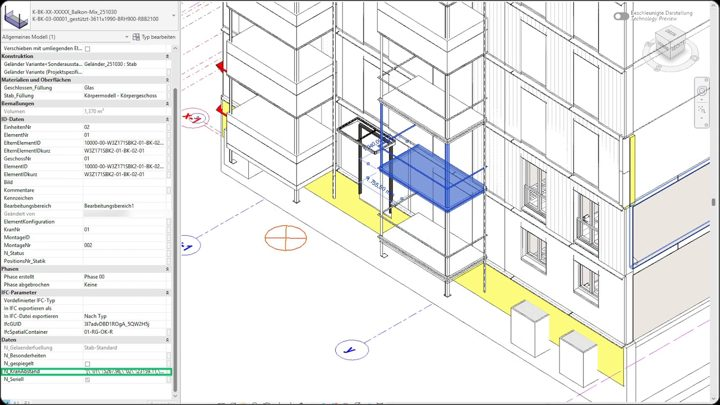

KranAbstand
The distance from every element to every crane, stored in the model

Lifting plans need to know how far each element is from each crane. This add-in measures the XY distance from every structural element to every crane in the model, and writes the result into a parameter on the element as a small JSON string. Crane-capacity checks can then read the values straight from the model, without any new measuring.
The calculation
Design decisions
JSON in a parameterOne text parameter holds any number of cranes, and any tool can parse it.
Precise filteringA whitelist of element types decides what's measured, and facade variants are excluded.
Debug loggingDebug builds write detailed logs, without weighing down the release build.